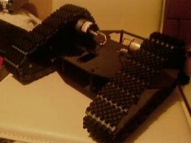
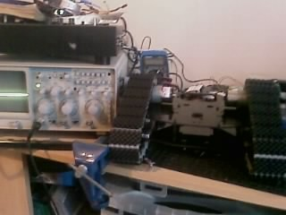
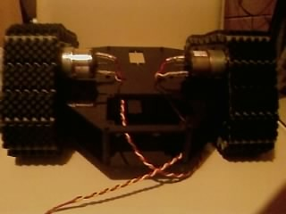

John - The Birth!
For my latest project, I've decided to make a tracked robot, cunningly named John. Tracks are really cool, and something I've not had on a robot before. Nice perhaps, but tedious to make, as hooking together 40+ segments of track with impossible to fasten pins makes for a pretty boring/annoying task..
Anyways, so far I have the chassis built, tracks built and motors in. He's looking cool so far, like the bottom of a mini Johnny 5 :)
The chassis is made from laser cut Lexan panels, with aluminium brackets. The tracks are heavy duty polypropylene and rubber, along with 7.2v 50:1 geared motors.
Obviously, at this stage, he does pretty much bugger all. In order for him to even move I've still got to fit a motor controller and a cpu, plus write all the inital movement routines. I intend to use a BASIC Stamp 2 for the brains at the moment, but will switch it over to the Propeller when I've got one.
Here be some initial pics:



And here's a picture of an airborne cat: